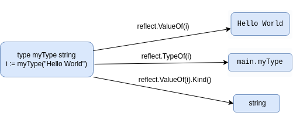

Introduction
The Go programming language is a popular statically-typed, compiled programming language that has a C-like syntax. It is gaining more popularity every day in modern developer communities because of features such as memory safety, garbage collection, concurrency, performance, and a developer-friendly minimal syntax.
Go provides a set of libraries known as Go’s standard library, these libraries has almost all the features we need for a modern programming language. It also offers a package to work with reflection, which is a concept that comes from the metaprogramming paradigm.

Metaprogramming
Metaprogramming is a programming technique in which computer programs have the ability to treat other programs as their data. It means that a program can be designed to read, generate, analyze or transform other programs, and even modify itself during runtime. It allows programs a greater flexibility to efficiently handle new situations without recompilation. Metaprogramming can be used to move computations from run-time to compile-time, to generate code using compile time computations, and to enable self-modifying code. The ability of a programming language to be its own metalanguage is called reflection. Reflection is a valuable language feature to facilitate metaprogramming.
Reflection
Reflection is a sub-topic of the metaprogramming paradigm. Almost all popular languages expose internal APIs to handle metaprogramming for the particular programming language itself. These APIs are known as reflection APIs, and they serve as a particular programming language’s ability to inspect, manipulate, and execute the structure of the code. Reflection provides us features like: - Inspect the properties of a struct - Check whether a function exists in a struct instance - Check an atomic type of unknown variable with reflection APIs
The Go reflect package gives you features to inspect and manipulate an object at runtime. Reflection is an extremely powerful tool for developers and extends the horizon of any programming language. Types, Kinds and Values are three important pieces of reflection that are used in order to find out information.
Reflection in Go
The foundation of Go reflection is based around Values, Types and Kinds.These are defined in the package and are of the type reflect.Value, reflect.Type and reflect.Kind and can be obtained using the methods: - reflect.ValueOf(x interface{}). - reflect.TypeOf(x interface{}). - Type.Kind().
Although, terms kind and types seems to be similar, A Type is the representation of a type in Go. For example, let say a user is a custom-defined type in go, the name assigned by the user is stored in as Type, whereas A Kind is the representation of the type of Type. For example in user custom-defined types, the data-type of the Type will be the Kind.
Let take a look on the code below:
We have defined a custom type named myType which takes the string value. The output of the above code will be:
Success #stdin #stdout 0s 5592KB
Value:- Hello World Type:- main.myType Kind:- string
As you can see the type of the aforementioned struct is main.myType which would be its name and the kind is string.
Use case and Implementation of reflection in Go
In modern metaprogramming paradigm, reflection can have many helpful use cases, some of them are: - Programmers can use reflection to solve programming problems with less code - - e.g., if you are using a struct instance to build a SQL query, you can use reflection to extract struct fields without hardcoding every struct field name - Since reflection offers a way to examine the program structure, it is possible to build static code analyzers by using it - We can dynamically execute code with the help of the reflection API - - e.g., you can find existing methods of a struct and call them by name
Let's take use case to get a deeper understanding of ``reflection in go``.
Let's take a structure:
The above structure can store multiple data-types and also store nested structures. The use case is we need to process all the string that is stored within the above structure without actually reading the data.
Below is the main() function for the above use case:
In the above code, we have an object data which has a complex structure, if we have to implement the code for the aforementioned use case the code will be way too complex. Hence, reflection is much faster and easier way to deal with such use cases.
Below is the recursive function we have used:
The Output of the above code is:
It's worth to be noted, the NumField() and .Field()are only applicable to structs. A panic will be caused if the element is not a struct. Also while dealing with reflect.Ptr we should be mindful of using reflect.Indirect() from which we ca retrieve the value the pointer is pointing to.
Hence, we have to be very careful while implementing program using reflect package as it can easily trigger a panic.
Conclusion
In this blog, we have explored the concept of metaprogramming and reflection in programming languages. Also, we have discussed various use cases and implementation of reflection to get the better understanding of it. Knowing the types of variables during run-time enables us to write a more flexible and faster code. Hence, reflection is one of the most importance feature of metaprogramming paradigm.
Related Posts